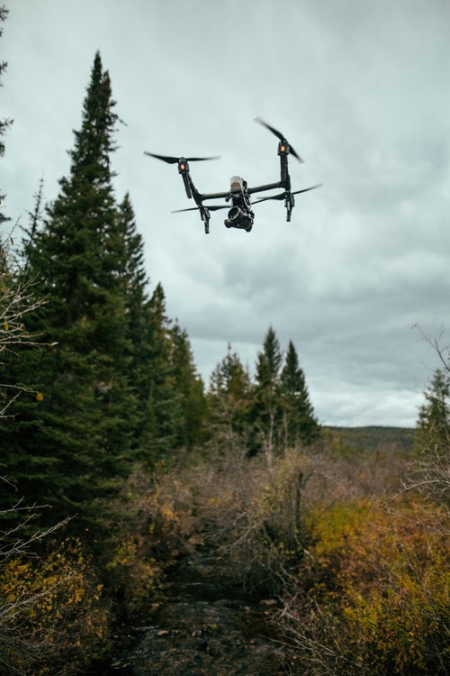

Autonomous Things (robots)
- Autonomous Things is the new term used to describe technical developments that are expected
to bring computers to life and into the physical environment and they are supposed to work without any human direction.
- Examples of autonomous things are self-navigating drones. By 2020 it is expected that an autonomous car will be available. Another application of autonomous things are robots
these are now being used to care for elderly people.
Link to more information on Autonomous Things
